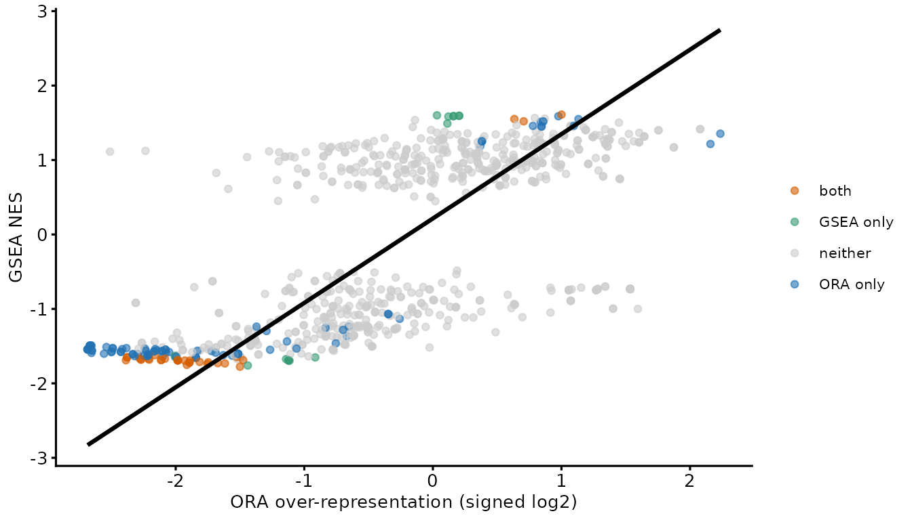

There are two ways to ask whether a set of results is functionally structured, and they differ in what they take as input.
Over-representation analysis (ORA) takes a list: the proteins you called significant. It asks whether a term appears in that list more often than the background rate. Gene set enrichment analysis (GSEA) takes a ranking: every protein you tested, ordered by a signed statistic. It asks whether a term’s proteins sit systematically towards one end of that ranking.
The practical consequence is that ORA depends on where you put the significance threshold and GSEA does not, while GSEA depends on the ranking statistic and ORA does not. Neither is generally better. Below we run both on the same data and look at where they agree, where they disagree, and what the disagreements have in common.
The functional enrichment vignette covers the ORA workflow in detail; here it is compressed to what is needed for the comparison.
Shared input
The same MPXV-vs-control plasma comparison used in functional enrichment, and the same GO annotations.
dia_prot <- dia_qf[, colData(dia_qf)$group %in% c('control', 'MPXV')]
group <- factor(dia_prot[['protein']]$group, levels = c('control', 'MPXV'))
n_quant <- sapply(levels(group), function(g){
rowSums(!is.na(assay(dia_prot[['protein']])[, group == g, drop = FALSE]))
})
testable <- rownames(n_quant)[apply(n_quant, 1, min) >= 2]
limma_results <- assay(dia_prot[['protein']])[testable, ] %>%
lmFit(model.matrix(~group)) %>%
eBayes(trend = TRUE, robust = TRUE) %>%
topTable(coef = 'groupMPXV', number = Inf) %>%
tibble::rownames_to_column('Protein')
go_res_all <- readRDS(system.file(
'extdata', 'go_enrichment_cache.rds', package = 'biomasslmb'))$go_res_all
gene2cat <- go_res_all[, c('UNIPROTKB', 'GO.ID')]ORA
Two tests, one per direction, each against the tested proteins as background.
bias <- setNames(limma_results$AveExpr, limma_results$Protein)
run_ora <- function(sig, direction){
pwf <- nullp(sig, bias.data = bias, plot.fit = FALSE)
get_enriched_go(pwf, gene2cat = gene2cat, method = 'Wallenius') %>%
estimate_overrep(pwf, gene2cat) %>%
add_independent_filtering_padj(plot = FALSE) %>%
mutate(over_represented_adj_pval = padj_if, direction = direction)
}
set.seed(0)
ora <- bind_rows(
run_ora(setNames(limma_results$adj.P.Val < 0.05 & limma_results$logFC > 0,
limma_results$Protein), 'Increased'),
run_ora(setNames(limma_results$adj.P.Val < 0.05 & limma_results$logFC < 0,
limma_results$Protein), 'Decreased'))To compare against a single signed GSEA statistic, we reduce each term to its better-supported direction and give the over-representation a sign.
ora_best <- ora %>%
group_by(category) %>%
# with_ties = FALSE guarantees one row per term even where a term is called
# equally strongly in both directions, so the join against GSEA stays 1:1
slice_min(padj_if, n = 1, with_ties = FALSE) %>%
ungroup() %>%
mutate(ora_score = ifelse(direction == 'Increased',
log2(adj_overrep), -log2(adj_overrep)))GSEA
fgsea needs the annotations as a list of protein
vectors, and a named vector of ranking statistics. We rank by
logFC * -log10(P.Value), so that a protein needs both a
consistent direction and a small p-value to rank at either extreme —
ranking on fold-change alone would put noisy, weakly-measured proteins
at the top.
pathways <- lapply(split(go_res_all$UNIPROTKB, go_res_all$GO.ID), unique)
stats <- setNames(limma_results$logFC * -log10(limma_results$P.Value),
limma_results$Protein)minSize and maxSize do the job that
independent filtering does for ORA: they exclude terms too small to be
estimated and too large to be specific, before any multiple-testing
correction.
set.seed(0)
gsea <- fgsea(pathways = pathways, stats = stats,
minSize = 5, maxSize = 200, nPermSimple = 10000) %>%
as.data.frame()
go_terms <- distinct(go_res_all[, c('GO.ID', 'TERM', 'ONTOLOGY')])
gsea <- merge(gsea, go_terms, by.x = 'pathway', by.y = 'GO.ID') %>%
arrange(pval)
c(terms_tested = nrow(gsea), significant = sum(gsea$padj < 0.05, na.rm = TRUE))
#> terms_tested significant
#> 868 48Note that GSEA needed no direction split. The sign of the normalised enrichment score (NES) carries it, and one test covers both.
Where they agree
comparison <- merge(
ora_best[, c('category', 'term', 'ontology', 'numDEInCat', 'numInCat',
'padj_if', 'direction', 'ora_score')],
gsea[, c('pathway', 'NES', 'padj', 'size')],
by.x = 'category', by.y = 'pathway') %>%
mutate(called = case_when(
padj_if < 0.05 & padj < 0.05 ~ 'both',
padj_if < 0.05 ~ 'ORA only',
padj < 0.05 ~ 'GSEA only',
TRUE ~ 'neither'))
comparison %>% count(called) %>% knitr::kable()| called | n |
|---|---|
| GSEA only | 15 |
| ORA only | 86 |
| both | 33 |
| neither | 680 |
Both methods put the same terms on the same side. Below, the signed ORA effect size against the GSEA NES, for the 814 terms both tested.
The trend line is fitted by total least squares, via
biomasslmb::tls. Ordinary least squares assumes the x
variable is measured without error and minimises vertical distance,
which makes the fitted slope depend on which variable you happen to put
on which axis. Here neither is a predictor of the other — both are noisy
estimates of the same underlying enrichment — so the symmetric fit is
the appropriate one. The same argument applies to any
logFC-against-logFC comparison of two methods or two experiments.
comparison %>%
ggplot(aes(ora_score, NES)) +
geom_point(aes(colour = called), size = 1.5, alpha = 0.6) +
geom_smooth(method = biomasslmb::tls, se = FALSE, colour = 'black') +
scale_colour_manual(values = c(both = get_cat_palette(3)[2],
`ORA only` = get_cat_palette(3)[1],
`GSEA only` = get_cat_palette(3)[3],
neither = 'grey80'),
name = NULL) +
theme_biomasslmb(base_size = 10, aspect_square = FALSE) +
labs(x = 'ORA over-representation (signed log2)', y = 'GSEA NES')
The correlation between the two effect sizes is 0.67. Where they disagree, they disagree about magnitude and about significance, not about direction — which is worth knowing, because it means a term called by one method and missed by the other is usually a power difference rather than a contradiction.
Where they disagree
comparison %>%
filter(called == 'ORA only') %>%
arrange(padj_if) %>%
select(term, numInCat, numDEInCat, ora_score, padj_if, padj) %>%
head(6) %>%
knitr::kable(digits = c(NA, 0, 0, 2, 4, 3),
caption = 'Called by ORA only')| term | numInCat | numDEInCat | ora_score | padj_if | padj |
|---|---|---|---|---|---|
| phospholipid efflux | 7 | 6 | -2.66 | 0.0054 | 0.078 |
| complement binding | 9 | 8 | 2.24 | 0.0058 | 0.345 |
| plasma lipoprotein particle assembly | 9 | 6 | -2.33 | 0.0088 | 0.089 |
| chylomicron | 9 | 6 | -2.32 | 0.0088 | 0.061 |
| neutral lipid catabolic process | 6 | 5 | -2.69 | 0.0088 | 0.117 |
| acylglycerol catabolic process | 6 | 5 | -2.69 | 0.0088 | 0.117 |
comparison %>%
filter(called == 'GSEA only') %>%
arrange(padj) %>%
select(term, numInCat, numDEInCat, NES, padj, padj_if) %>%
head(6) %>%
knitr::kable(digits = c(NA, 0, 0, 2, 4, 3),
caption = 'Called by GSEA only')| term | numInCat | numDEInCat | NES | padj | padj_if |
|---|---|---|---|---|---|
| response to stimulus | 190 | 39 | 1.60 | 0.0278 | 0.535 |
| molecular function activator activity | 21 | 7 | -1.76 | 0.0278 | 0.050 |
| leukocyte mediated immunity | 62 | 13 | 1.58 | 0.0320 | 0.805 |
| receptor-mediated endocytosis | 11 | 3 | -1.67 | 0.0320 | 0.445 |
| membrane | 137 | 28 | 1.49 | 0.0320 | 0.767 |
| immunoglobulin mediated immune response | 58 | 13 | 1.59 | 0.0320 | 0.767 |
Compare the numInCat (proteins in the background) and
numDEInCat (of those, significant) columns between the two
tables. Most of the difference is there:
-
ORA finds small terms that are almost entirely
significant.
phospholipid effluxhas 7 proteins in the background and 6 of them are significant. That is a striking result for a hypergeometric test, and a weak one for a ranking test: 7 proteins out of 231 cannot occupy enough of the ranking to produce an extreme enrichment score, however well they are placed. -
GSEA finds large terms that shift consistently without
individually clearing the threshold.
leukocyte mediated immunityhas 62 background proteins of which 13 are significant — an unremarkable fraction — but enough of the other 49 sit on the same side of the ranking that the term is enriched overall. ORA cannot see those 49 at all; they are simply absent from its input.
Neither is an error. They are answering different questions, and the term sizes tell you which question a given term was ever going to be able to answer.
Does either handle abundance bias better?
goseq corrects for abundance bias explicitly, through
the probability weighting function. fgsea has no
equivalent: the ranking statistic is its only input, so any tendency for
abundant proteins to rank more extremely is carried straight through. It
would be reasonable to expect the ORA results to end up less associated
with abundance as a result.
On these data they do not.
mean_abundance <- sapply(pathways[comparison$category], function(p){
mean(bias[intersect(p, names(bias))], na.rm = TRUE)
})
comparison$mean_abundance <- mean_abundance
comparison %>%
summarise(
ORA = cor(mean_abundance, -log10(padj_if + 1e-10), use = 'complete.obs'),
GSEA = cor(mean_abundance, -log10(padj + 1e-10), use = 'complete.obs')) %>%
round(3) %>%
knitr::kable(caption = 'Correlation of term mean abundance with significance')| ORA | GSEA |
|---|---|
| 0.364 | 0.296 |
Both outputs retain a similar association between a term’s mean protein abundance and its significance, and the ORA one is slightly the stronger. The PWF corrects the test; it does not make the surviving term list abundance-neutral, partly because term size and mean abundance are themselves related and independent filtering removes small terms preferentially.
The useful conclusion is not that the correction is worthless — it changes which terms are called, and on this data it is the difference between 18 and 41 significant terms in the increased direction. It is that neither method’s output should be read as free of abundance effects, and that checking is cheap.
Which to use
Run both. They cost seconds, they use the same inputs, and the comparison above is more informative than either alone. When they must be reduced to one:
| Situation | Prefer | Why |
|---|---|---|
| Few significant proteins | GSEA | ORA loses power with the foreground; GSEA uses every tested protein |
| Many significant proteins | Either | Both have power; disagreements are informative |
| Interest is in small, specific terms | ORA | A small term cannot move a ranking statistic far enough |
| Interest is in broad programmes | GSEA | A diffuse shift never reaches the ORA foreground |
| Threshold is arbitrary or contested | GSEA | GSEA has no threshold to argue about |
| Abundance bias is a known concern | ORA, but verify | Only goseq offers a correction, and it is not a guarantee |
Two things apply whichever you use. Report the background, since
neither result means anything without it. And collapse the GO hierarchy
before counting your findings — remove_redundant_go() works
on fgsea output too, given the right column names:
gsea %>%
filter(padj < 0.05) %>%
remove_redundant_go(go_category_col = 'pathway', p_value_col = 'pval')Summary
- ORA takes a thresholded list and asks whether a term is over-represented in it; GSEA takes the full ranking and asks whether a term’s proteins are concentrated at one end
- On the same data they agreed on direction, with the two effect sizes correlating at 0.67, and disagreed on 101 of 814 terms
- The disagreements follow term size: ORA wins on small terms that are almost wholly significant, GSEA on large terms that shift consistently below the threshold
- Only
goseqoffers an abundance-bias correction, but on this data the surviving term lists were similarly associated with abundance either way, so verify rather than assume -
tls()gives the appropriate fit when comparing two methods’ effect sizes, since neither axis is the predictor
Where to go next
- Functional enrichment covers the ORA workflow properly, including what the foreground threshold costs.
- Data exploration and statistical testing covers where the ranking statistic comes from.
Getting help
If your experiment does not fit what this article assumes, or a result looks wrong, please get in touch with Tom Smith (tsmith@mrclmb.ac.uk) rather than guessing — it is far easier to help while an analysis is in progress than to unpick a decision afterwards, and easier still before the samples are run. Getting started sets out which article applies to which experiment.
sessionInfo()
#> R version 4.5.3 (2026-03-11)
#> Platform: x86_64-pc-linux-gnu
#> Running under: Ubuntu 24.04.5 LTS
#>
#> Matrix products: default
#> BLAS: /usr/lib/x86_64-linux-gnu/openblas-pthread/libblas.so.3
#> LAPACK: /usr/lib/x86_64-linux-gnu/openblas-pthread/libopenblasp-r0.3.26.so; LAPACK version 3.12.0
#>
#> locale:
#> [1] LC_CTYPE=C.UTF-8 LC_NUMERIC=C LC_TIME=C.UTF-8
#> [4] LC_COLLATE=C.UTF-8 LC_MONETARY=C.UTF-8 LC_MESSAGES=C.UTF-8
#> [7] LC_PAPER=C.UTF-8 LC_NAME=C LC_ADDRESS=C
#> [10] LC_TELEPHONE=C LC_MEASUREMENT=C.UTF-8 LC_IDENTIFICATION=C
#>
#> time zone: UTC
#> tzcode source: system (glibc)
#>
#> attached base packages:
#> [1] stats4 stats graphics grDevices utils datasets methods
#> [8] base
#>
#> other attached packages:
#> [1] fgsea_1.36.2 goseq_1.62.0
#> [3] geneLenDataBase_1.46.0 BiasedUrn_2.0.12
#> [5] limma_3.66.0 dplyr_1.2.1
#> [7] ggplot2_4.0.3 biomasslmb_0.1.0
#> [9] QFeatures_1.20.0 MultiAssayExperiment_1.36.2
#> [11] SummarizedExperiment_1.40.0 Biobase_2.70.0
#> [13] GenomicRanges_1.62.1 Seqinfo_1.0.0
#> [15] IRanges_2.44.0 S4Vectors_0.48.1
#> [17] BiocGenerics_0.56.0 generics_0.1.4
#> [19] MatrixGenerics_1.22.0 matrixStats_1.5.0
#>
#> loaded via a namespace (and not attached):
#> [1] naniar_1.1.0 RColorBrewer_1.1-3 jsonlite_2.0.0
#> [4] magrittr_2.0.5 GenomicFeatures_1.62.0 farver_2.1.2
#> [7] corrplot_0.95 rmarkdown_2.32 fs_2.1.0
#> [10] BiocIO_1.20.0 ragg_1.5.2 vctrs_0.7.3
#> [13] memoise_2.0.1 Rsamtools_2.26.0 RCurl_1.98-1.20
#> [16] htmltools_0.5.9 S4Arrays_1.10.1 BiocBaseUtils_1.12.0
#> [19] progress_1.2.3 curl_8.0.0 SparseArray_1.10.10
#> [22] sass_0.4.10 uniprotREST_1.0.0 bslib_0.12.0
#> [25] htmlwidgets_1.6.4 desc_1.4.3 plyr_1.8.9
#> [28] httr2_1.3.0 cachem_1.1.0 GenomicAlignments_1.46.0
#> [31] igraph_2.3.3 lifecycle_1.0.5 pkgconfig_2.0.3
#> [34] Matrix_1.7-4 R6_2.6.1 fastmap_1.2.0
#> [37] clue_0.3-68 digest_0.6.39 AnnotationDbi_1.72.0
#> [40] textshaping_1.0.5 RSQLite_3.53.3 labeling_0.4.3
#> [43] filelock_1.0.3 mgcv_1.9-4 httr_1.4.9
#> [46] abind_1.4-8 compiler_4.5.3 bit64_4.8.6
#> [49] withr_3.0.3 S7_0.2.2 backports_1.5.1
#> [52] BiocParallel_1.44.0 DBI_1.3.0 biomaRt_2.66.2
#> [55] MASS_7.3-65 DelayedArray_0.36.1 rjson_0.2.23
#> [58] tools_4.5.3 otel_0.2.0 visdat_0.6.0
#> [61] glue_1.8.1 restfulr_0.0.17 nlme_3.1-168
#> [64] grid_4.5.3 checkmate_2.3.4 cluster_2.1.8.2
#> [67] reshape2_1.4.5 gtable_0.3.6 tidyr_1.3.2
#> [70] data.table_1.18.6.1 hms_1.1.4 XVector_0.50.0
#> [73] pillar_1.11.1 stringr_1.6.0 genefilter_1.92.0
#> [76] robustbase_0.99-7 splines_4.5.3 BiocFileCache_3.0.0
#> [79] lattice_0.22-9 survival_3.8-6 rtracklayer_1.70.1
#> [82] bit_4.6.0 annotate_1.88.0 tidyselect_1.2.1
#> [85] GO.db_3.22.0 Biostrings_2.78.0 knitr_1.52
#> [88] ProtGenerics_1.42.0 xfun_0.60 statmod_1.5.2
#> [91] DEoptimR_1.2-1 stringi_1.8.9 UCSC.utils_1.6.1
#> [94] lazyeval_0.2.3 yaml_2.3.12 evaluate_1.0.5
#> [97] codetools_0.2-20 cigarillo_1.0.0 MsCoreUtils_1.22.1
#> [100] tibble_3.3.1 cli_3.6.6 xtable_1.8-8
#> [103] systemfonts_1.3.2 jquerylib_0.1.4 Rcpp_1.1.2
#> [106] GenomeInfoDb_1.46.2 dbplyr_2.6.0 png_0.1-9
#> [109] XML_3.99-0.24 parallel_4.5.3 pkgdown_2.2.1
#> [112] blob_1.3.0 prettyunits_1.2.0 AnnotationFilter_1.34.0
#> [115] bitops_1.1-0 txdbmaker_1.6.2 scales_1.4.0
#> [118] purrr_1.2.2 crayon_1.5.3 rlang_1.3.0
#> [121] fastmatch_1.1-8 cowplot_1.2.0 KEGGREST_1.50.0